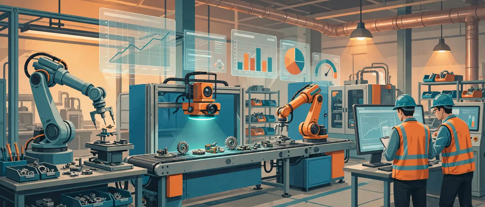

Industrial AI · Project Lab
工业 AI 实战项目
从任务书做到验收上线
《制造业算法学院》讲的是算法怎么工作，这一站讲的是项目怎么落地。8 个项目全部按真实工厂的推进方式拆解：先说清痛点和钱，再定数据、模型、实验，最后用 KPI 验收——不是看懂，是能照着做一遍。
1先读任务书，别急着建模每个项目第一页就是业务任务书：痛点、基线、目标、验收口径。工厂里 80% 的 AI 项目死在这里没对齐。
2在交互实验里调一调拖动阈值、提前量、平滑系数，亲眼看漏检、误报、能耗和交期怎么此消彼长，建立调参直觉。
3下载模拟数据自己跑每个项目附一份课堂模拟 CSV，字段和真实产线一致。数据为教学模拟，非真实工厂数据。
项目库
点任意项目展开完整任务书。建议顺序：01 → 02 → 03 打基础，再按你工厂的痛点挑后面的。
这个组合下没有项目，换个筛选试试。
90 天落地路线：从试点到复制
8 个项目不用同时上。真实工厂的节奏是先拿一个高价值、低阻力的试点证明 ROI，再复制。
DAY 1 — 30 · 试点验证
选 1 个项目跑通闭环
- 优先 01 视觉质检或 02 预测维护：数据现成、效果可量化
- 只接 1 条线 / 1 类设备，不贪大
- 第 30 天用任务书的 KPI 口径做第一次验收汇报
DAY 31 — 60 · 接入与固化
从离线模型到在线运行
- 数据管道自动化：采集、清洗、异常值处理不再靠人工导表
- 模型输出进 MES / 看板，和现有流程咬合，而不是另起一个系统
- 建立误报复盘机制：一线反馈要能回流成新样本
DAY 61 — 90 · 复制与扩展
横向复制 + 启动第二个项目
- 把试点产线的模型、阈值策略、验收模板打包成可复制包
- 复制到第 2、3 条线时重点看数据分布漂移，别直接照搬阈值
- 启动工艺优化或排产类项目，难度上一个台阶
试点验收前，用 ROI 测算器 把账写进立项书；上线前用 避坑手册的 10 条红线 过一遍。算法直觉回到 算法课程。
常用技术栈速查
项目里反复出现的工具组合，按层记住就行，不用全学。
数据采集 · OPC UA / Modbus / MQTT时序库 · InfluxDB / TDengine建模 · Python / scikit-learn / PyTorch视觉 · YOLO / OpenCV优化 · OR-Tools / 贝叶斯优化部署 · ONNX / Edge 边缘盒子看板 · Grafana / ThingsBoard版本与实验 · MLflow / DVC